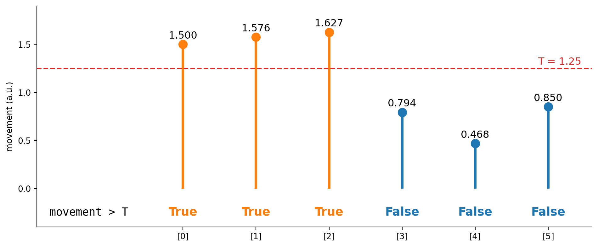
Biomedical Engineering Skills 3
Week 2: numpy, matplotlib and scipy
Massimo Vassalli
massimo.vassalli@glasgow.ac.uk
Today
The three libraries almost every data analysis in Python stands on:
| Library | What it gives you |
|---|---|
| numpy | arrays, and the basic operations on them |
| matplotlib | figures, every element under your control |
| scipy | algorithms: filters, peaks, statistics, fitting, images |
Later in the course, scikit-image (images) and pandas (tables) are built on the same arrays.
numpy
Python likes numbers: integers, floats, complex numbers, and a standard library with math, statistics, random.
Python does not like numbers: no vectors or matrices, and every operation on a list is a loop, run one element at a time.
--------------------------------------------------------------------------- TypeError Traceback (most recent call last) Cell In[49], line 3 1 a = [1, 2, 3] 2 b = [4, 5, 6] ----> 3 print(a * b) TypeError: can't multiply sequence by non-int of type 'list'
numpy: why
numpy is the foundation of scientific Python: scipy, scikit-image, pandas and most of machine learning are built on its arrays.
- an array holds values of one type, stored next to each other in memory
- operations on whole arrays run in compiled code, not in the Python interpreter: this is called vectorisation
- one array, many dimensions: a signal (1D), a table or an image (2D), a stack of images (3D)
Vectorisation = speed
Counting the samples above a threshold, in one million samples:
import timeit
movement = np.random.default_rng(0).uniform(0, 3, 1_000_000)
T = 1.25
def count_loop():
n = 0
for value in movement:
if value > T:
n += 1
return n
def count_numpy():
return int((movement > T).sum())
t_loop = timeit.timeit(count_loop, number=3) / 3
t_np = timeit.timeit(count_numpy, number=3) / 3
print(f"loop: {1000 * t_loop:7.1f} ms")
print(f"numpy: {1000 * t_np:7.1f} ms")
print(f"numpy is ~{t_loop / t_np:.0f} times faster")loop: 66.1 ms
numpy: 1.0 ms
numpy is ~67 times fasterNote
One million samples is less than two weeks of a wearable sampling once per second. For images, the difference decides whether an analysis is possible at all.
When numpy is not fast enough
numpy’s model (typed arrays, whole-array operations) is shared by a family of libraries that go further:
- Numba: compiles your own Python loops to machine code
- CuPy: numpy-like arrays on an NVIDIA GPU
- JAX, PyTorch: arrays on GPUs, the basis of machine learning
- Dask: arrays larger than memory, processed in chunks, in parallel
Matrix operations in numpy itself already run on optimised libraries (BLAS/LAPACK).
Tip
Learn numpy’s way of thinking once; the same code style carries over when you need more speed or bigger data.
Arrays: making them
[0.3 1.5 0.8 1.6] (4,) float64 4
[0 1 2 3 4]
[0. 0. 0.]
[0.5 0.5 0.5]
[0. 0.25 0.5 0.75 1. ]Every array has a shape (how many values, along each direction), a dtype (the one type of all its values) and a size (how many values in total).
Tip
shape and dtype are the first things to print when something looks wrong. Most array errors are shape errors.
Indexing and slicing
[ 0 10 20 30 40 50 60 70 80 90]
0
90
[20 30 40]
[ 0 30 60 90]Slices work as for lists: start:stop:step, with stop excluded.
Boolean masks
A comparison on an array gives an array of True / False, one per value: a mask.
[ True True True False False False]
3
50.0
[1.5 1.576 1.627]Note
movement > T, then .sum(): how many values are above a threshold, in two lines, whether there are six values or six million.
A mask, drawn
Six values, one threshold: three above it. mask.sum() is 3, and mask.mean() is 0.5.
What numpy won’t tell you (1)
numpy stores numbers the way the computer does: a fixed size, a fixed type, shared memory. The consequences can surprise you, and none of these raises an error:
What numpy won’t tell you (2)
[99. 1. 2. 3. 4. 5.]2 <class 'numpy.int64'>
TypeError: Object of type int64 is not JSON serializablenumpy returns its own number types. They print and compute like Python numbers, so the difference usually goes unnoticed, until the value leaves numpy: saving it to a file, or passing it to code that expects a Python int.
What numpy won’t tell you (3)
One that does raise an error, with an unhelpful message:
--------------------------------------------------------------------------- ValueError Traceback (most recent call last) Cell In[61], line 2 1 m = np.array([0.3, 1.4, 2.2]) ----> 2 print((m > 0.5) and (m < 2)) ValueError: The truth value of an array with more than one element is ambiguous. Use a.any() or a.all()
Opening data: text or binary
Now the data. Every analysis starts by reading a file, and files come in two families:
Text (.csv, .txt)
- numbers written as characters
- readable in any editor, by any program
- larger, slower to read, and only as precise as the digits written
Binary (.npy, images, instrument files)
- the bytes of the numbers themselves
- compact, exact and fast
- unreadable by eye: the reader must know the format (type, shape)
Text or binary: the numbers
One million random values, saved both ways:
import os, timeit
x = np.random.default_rng(0).normal(size=1_000_000)
np.savetxt("big.csv", x) # text
np.save("big.npy", x) # binary, numpy's own format
for f in ["big.csv", "big.npy"]:
print(f, os.path.getsize(f) // 1_000_000, "MB")
t_txt = timeit.timeit(lambda: np.loadtxt("big.csv"), number=1)
t_bin = timeit.timeit(lambda: np.load("big.npy"), number=1)
print(f"read: text {t_txt:.2f} s, binary {t_bin:.3f} s")big.csv 26 MB
big.npy 8 MB
read: text 0.35 s, binary 0.003 sReading a text file: np.loadtxt
Our data are small, and text: easy to open, easy to check by eye.
time_h,movement_au
0.0000,0.300
0.1667,0.444ValueError: could not convert string 'time_h' to float64 at row 0, column 1.Note
Other useful options: usecols (read only some columns), dtype (the type of the values). For files with missing values, np.genfromtxt fills the gaps with nan.
One column, one signal
(144, 2)
[[0. 0.3 ]
[0.1667 0.444 ]
[0.3333 0.315 ]]
(144,) (144,)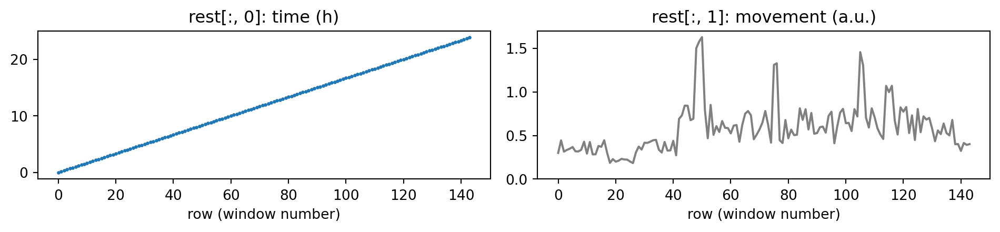
Slicing the real day
One window lasts 10 minutes, so window i starts at i / 6 hours.
0.3
0.401
[1.5 1.576 1.627 0.794 0.468 0.85 ]The six values of our mask, a few slides ago: they were 08:00 to 09:00 on the rest day.
axis: operating along one direction
(2, 144)
[ 7 68]
[1 2 1 1 0 1]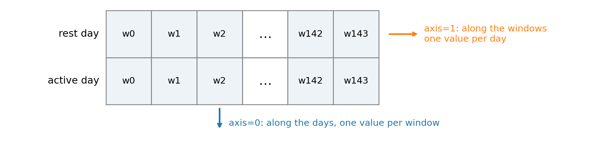
Tip
axis names the direction that disappears. Getting it wrong gives an answer of the wrong shape, often without any error.
What’s in numpy: a map
create np.array np.arange np.linspace np.zeros np.full
reshape and combine .reshape np.stack np.concatenate .T
element-wise maths + - * / np.sqrt np.exp np.log np.abs np.round
summarise .sum .mean np.median .std .max .argmax
np.percentile
select masks np.where np.any np.all
differences, order np.diff np.cumsum np.sort np.unique
missing values np.isnan np.nanmean np.nanmax
random numbers np.random.default_rng
linear algebra @ np.linalg.solve
Fourier np.fft.rfft np.fft.rfftfreq
files np.loadtxt np.savetxt np.save np.loadTip
You do not need to remember them: you need to know they exist, so that you recognise them in code (yours or the AI’s) and know what to look up.
Reshape: from windows to hours
(24, 6)
[0.35 0.35 0.34 0.21 0.27 0.42 0.35 0.74 1.14 0.58 0.59 0.62 0.82 0.52
0.69 0.63 0.64 0.92 0.61 0.86 0.68 0.61 0.57 0.39]The same 144 values, seen as a table of 24 rows (hours) and 6 columns (windows in each hour). reshape never changes the values, only how they are arranged: the total size must stay the same.
Summarising a signal
0.579576388888889 0.5305
0.2715203486302513
[0.22945 1.06885]
50 8.3333 1.627argmax gives the position of the maximum, not its value: with the position, you can find when it happened.
Element-wise maths, and selecting
[ 48 49 50 75 76 105 106]
[ 8. 8.1667 8.3333 12.5 12.6667 17.5 17.6667]
False True
1.25Differences, sums, sorting
[3 5 7]
[1 2 3 4]
(143,)
[1.5 1.576 1.627]
[1 2 3]Tip
np.diff of a boolean mask marks where it switches from False to True: the start of each episode. Keep it in mind.
Missing values and random numbers
nan 2.0
1[0.77395605 0.43887844 0.85859792]
[ 0.94056472 -1.95103519 -1.30217951]
[5 6 7]The same seed always gives the same numbers: random data that can be reproduced.
Linear algebra and Fourier, in brief
[11 18]
[0.8 1.4]matplotlib
Python has several plotting libraries:
- matplotlib: static figures, every element under your control
- seaborn: statistical plots with good defaults, built on matplotlib
- plotly, bokeh: interactive figures for web pages and dashboards
- napari: an interactive viewer for images and image stacks
Why matplotlib here: complete control over every choice in a figure; figures saved from code, so they can be regenerated from the data at any time (the basis of your figures in semester 2); and it is what the others build on, and what the AI writes most often.
Anatomy of a figure
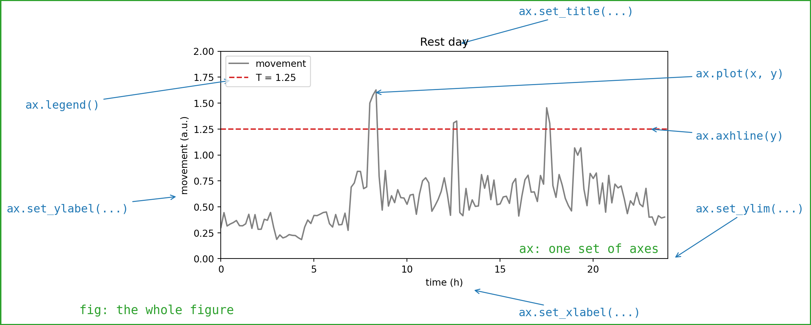
fig is the whole figure, ax is one set of axes inside it. Every element is one call on ax.
The calls you need
fig, ax = plt.subplots() # a figure with one plot
fig, axes = plt.subplots(2, 1) # two plots, one above the other
ax.plot(x, y) # a line
ax.plot(x, y, "o") # points
ax.bar(x, heights) # bars
ax.hist(values, bins=20) # a histogram
ax.axhline(y) # a horizontal line
ax.set_xlabel("time (h)") # axis labels (and ax.set_ylabel)
ax.set_title("Rest day") # a title
ax.set_xlim(0, 24) # limits (and ax.set_ylim)
ax.plot(x, y, label="rest day") # a label for the legend ...
ax.legend() # ... and the legend
fig.savefig("name.png", dpi=150) # save to a fileTip
With these few lines you can write most figures of this course by hand, and read the ones the AI writes.
A first figure
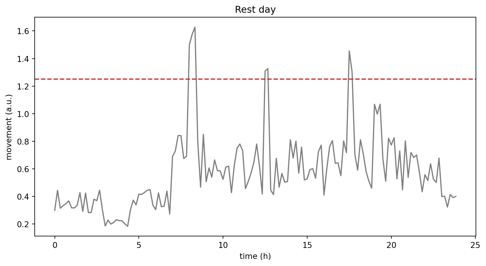
Seven lines, each one call from the table: this is a figure you can write by hand. Change one line at a time and watch what changes.
Two plots, one figure
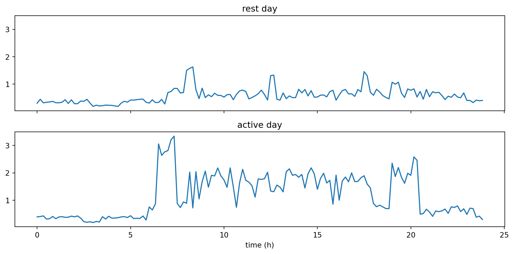
plt.subplots(rows, columns) returns an array of axes: axes[0], axes[1]. sharex and sharey give all plots the same limits.
Bars and histograms
fig, axes = plt.subplots(2, 1)
axes[0].hist(rest_mov, bins=20,
label="rest", alpha=0.6)
axes[0].hist(active_mov, bins=20,
label="active", alpha=0.6)
axes[0].set_xlabel("movement (a.u.)")
axes[0].legend()
means = [rest_mov.mean(),
active_mov.mean()]
axes[1].bar(["rest", "active"], means)
axes[1].set_ylabel("mean (a.u.)")
fig.tight_layout()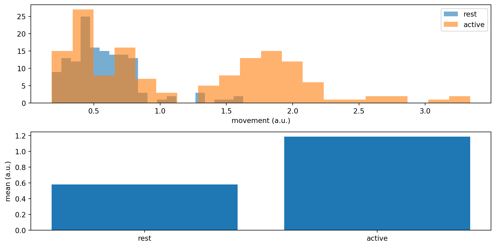
A histogram counts how many values fall in each interval: here, how the movement values of each day are spread.
What matplotlib won’t tell you
A figure can mislead with no bug in the code. The same two days, plotted twice:
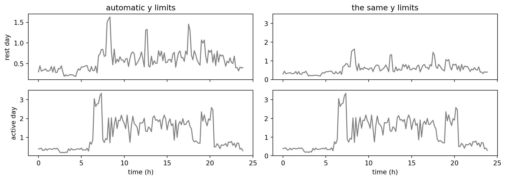
With automatic limits, each plot stretches to fill its own axes, and the rest day looks almost as busy as the active one.
Important
You choose what a figure shows. Axis limits, units and labels are part of the evidence.
scipy
numpy gives you the arrays; scipy gives you the algorithms: tested, documented implementations of the standard methods of science and engineering.
| Submodule | For example |
|---|---|
scipy.signal |
filters, spectra, peaks: ECG, PPG, EMG |
scipy.stats |
tests, correlation: comparing groups |
scipy.optimize |
fitting a model: kinetics, calibration |
scipy.interpolate |
values between measurements |
scipy.ndimage |
filtering and measuring images |
A signal to work on
A simulated photoplethysmogram (PPG, the pulse signal of a smartwatch), 20 s at 100 samples per second, with a slow baseline drift and noise:
fs = 100 # sampling frequency (Hz)
t = np.arange(0, 20, 1 / fs) # time (s)
rng = np.random.default_rng(1)
pulse = (0.5 * (1 + np.sin(2 * np.pi * 1.2 * t))) ** 6 # 1.2 beats/s
drift = 0.4 * np.sin(2 * np.pi * 0.2 * t)
ppg = pulse + drift + 0.15 * rng.normal(size=t.size)
fig, ax = plt.subplots(figsize=(10, 2.2))
ax.plot(t, ppg, lw=0.8)
ax.set_xlabel("time (s)")
ax.set_ylabel("PPG (a.u.)")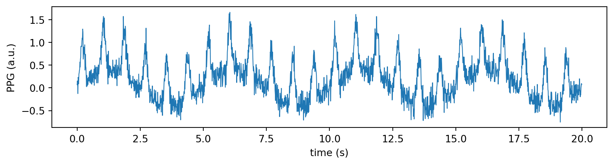
We know the answer: 1.2 beats per second, 72 beats per minute. Can we get it back from the noisy signal?
What frequencies are in it?
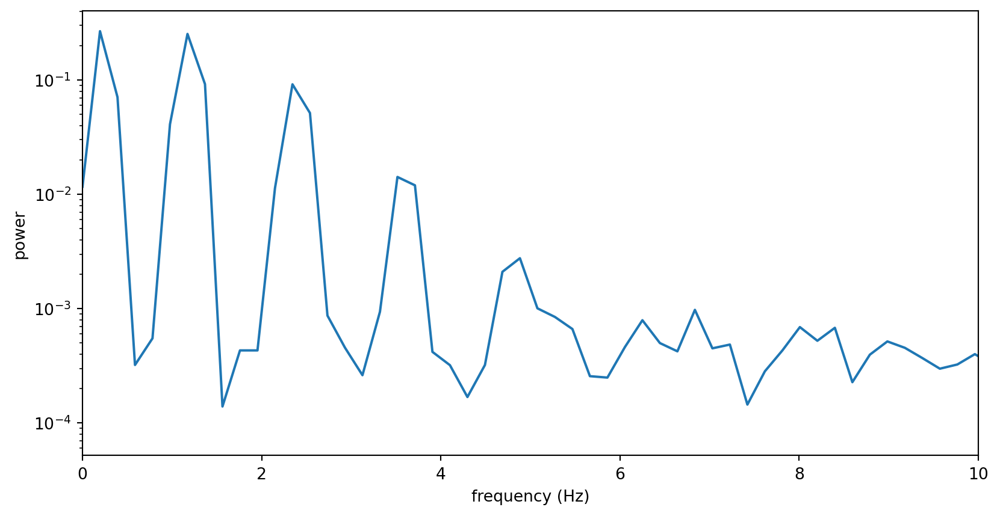
signal.welch estimates how much of the signal sits at each frequency: the drift near 0.2 Hz, the pulse at 1.2 Hz and its harmonics, and the noise spread everywhere.
Filtering by frequency
Keep 0.5 to 5 Hz: above the drift, below most of the noise.
b, a = signal.butter(4, [0.5, 5], btype="bandpass", fs=fs)
clean = signal.filtfilt(b, a, ppg)
fig, ax = plt.subplots(figsize=(10, 2.6))
ax.plot(t, ppg, lw=0.6, color="lightgrey", label="raw")
ax.plot(t, clean, color="tab:blue", label="filtered")
ax.set_xlabel("time (s)")
ax.legend(loc="upper right")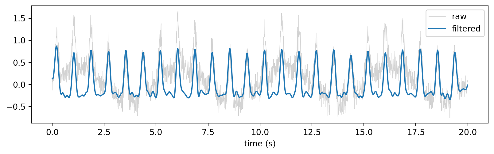
signal.butter designs the filter (order 4, band-pass, cut-offs in Hz, given fs); signal.filtfilt applies it forwards and backwards, so the filtered signal is not shifted in time. Other types: btype="lowpass", "highpass".
Smoothing
Two filters that do not need frequencies, only a window length in samples:
sg = signal.savgol_filter(ppg, window_length=31, polyorder=3)
med = signal.medfilt(ppg, kernel_size=31)
fig, ax = plt.subplots(figsize=(10, 2.6))
ax.plot(t, ppg, lw=0.6, color="lightgrey", label="raw")
ax.plot(t, sg, label="Savitzky-Golay")
ax.plot(t, med, label="median")
ax.set_xlim(0, 5)
ax.set_xlabel("time (s)")
ax.legend(loc="upper right")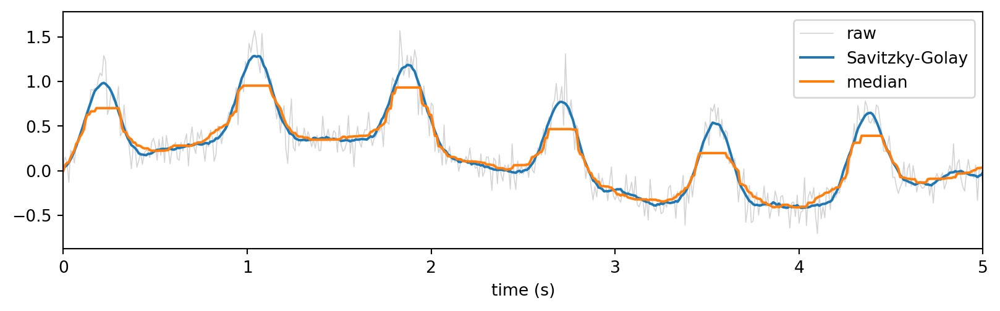
Savitzky-Golay fits a small polynomial in each window and keeps the shape of the peaks; the median filter removes isolated spikes. Neither removes the slow drift.
Finding peaks
peaks, _ = signal.find_peaks(clean, height=0.1, distance=0.4 * fs)
beat_times = t[peaks]
print(len(peaks), "beats;", round(60 / np.mean(np.diff(beat_times)), 1), "beats per minute")
fig, ax = plt.subplots(figsize=(10, 2.4))
ax.plot(t, clean)
ax.plot(t[peaks], clean[peaks], "o", color="tab:orange")
ax.set_xlabel("time (s)")24 beats; 71.9 beats per minute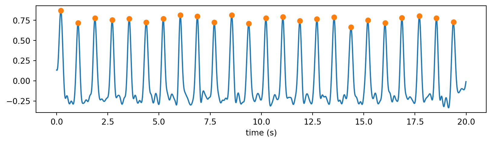
height and distance (here, at least 0.4 s between beats) are decisions: they define what counts as a beat. np.diff of the beat times gives the intervals between beats.
Statistics
Is the movement of the active day higher than that of the rest day?
0.5305 0.911
Mann-Whitney U: p = 1.3e-09
Welch t-test: p = 6.7e-16Also in scipy.stats: pearsonr and spearmanr (correlation), linregress (a straight-line fit), shapiro (normality), and the common distributions (stats.norm, stats.t).
Fitting a model
Drug concentration measured every 2 hours, and a model: \(c(t) = c_0 \, e^{-t/\tau}\).
from scipy import optimize
t_h = np.arange(0, 26, 2)
conc = 10 * np.exp(-t_h / 6) + rng.normal(0, 0.3, t_h.size)
def model(t, c0, tau):
return c0 * np.exp(-t / tau)
popt, pcov = optimize.curve_fit(model, t_h, conc, p0=[5, 3])
err = np.sqrt(np.diag(pcov))
print(f"c0 = {popt[0]:.1f} ± {err[0]:.1f}, tau = {popt[1]:.1f} ± {err[1]:.1f} h")
fig, ax = plt.subplots()
ax.plot(t_h, conc, "o", label="measured")
t_fine = np.linspace(0, 24, 200)
ax.plot(t_fine, model(t_fine, *popt), label="fit")
ax.set_xlabel("time (h)")
ax.set_ylabel("concentration (mg/L)")
ax.legend()c0 = 10.0 ± 0.3, tau = 5.9 ± 0.3 h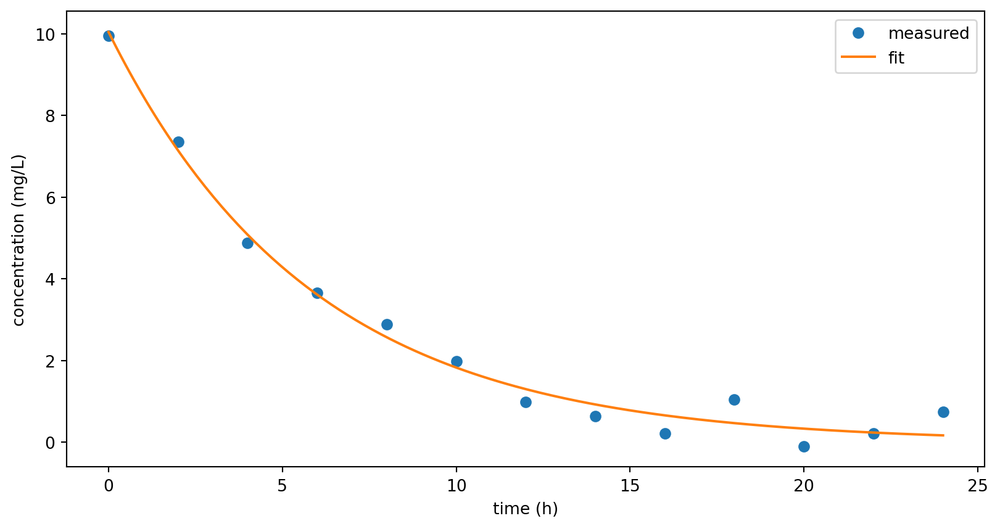
Interpolation
Measurements at irregular times, needed on a regular grid:
from scipy import interpolate
t_meas = np.array([0, 1, 3, 4, 7, 9])
y_meas = np.array([1.0, 2.1, 2.9, 2.6, 1.2, 0.8])
t_grid = np.linspace(0, 9, 91)
y_lin = np.interp(t_grid, t_meas, y_meas)
y_cub = interpolate.CubicSpline(t_meas, y_meas)(t_grid)
fig, ax = plt.subplots()
ax.plot(t_meas, y_meas, "o", label="measured")
ax.plot(t_grid, y_lin, label="linear (np.interp)")
ax.plot(t_grid, y_cub, label="cubic spline")
ax.legend()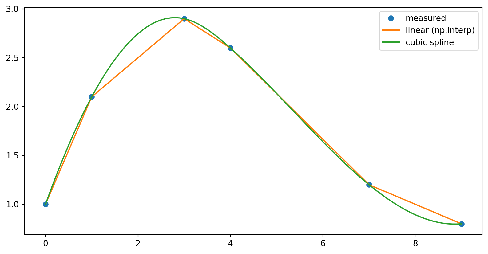
Between measurements, every method invents values. Linear is the most modest; a spline is smoother, and can overshoot.
What scipy won’t tell you
scipy runs the method you ask for, with the parameters you give. It does not know your data:
- the sampling frequency: a wrong
fsmoves every cut-off, silently - the filter: cut-offs and order are decisions; every filter also distorts the signal near its ends
filtfiltorlfilter: one keeps the timing of the peaks, the other shifts themfind_peaks:heightanddistancedefine what a beat is- a p-value: answers the question the test asks, under the test’s assumptions, not yours
curve_fit: needs a sensible starting point (p0), and its uncertainties are only meaningful if the model is right
Important
Every parameter you pass is part of the method: write down why you chose it.
Tutorial
What is this patient’s heart rate? A 5-minute electrocardiogram of one patient, 360 samples per second, in mV: an excerpt of a real recording (MIT-BIH Arrhythmia Database, record 208), with noise artefacts and irregular beats.
Together, in ENG3090_lec02_tutorial.ipynb: DEFINE the question and the rule, DECOMPOSE it into steps, SPECIFY each step for the AI and DIAGNOSE it with digital data and real data, then VALIDATE the result.
Bring: the lecture folder with lec02_src/data/ecg_mitbih208.npy.
Assignment 1
Desaturation episodes overnight. One night of oxygen saturation (SpO₂), one reading per second: how many desaturation episodes (below 90%), and how long on average?
- one notebook with the full DDSDV, run from the top
- every decision written in DEFINE
- digital data built on purpose, expected results by hand
- a VALIDATE that tests your own choices
Instructions, data and deadline on Moodle.
Take-home message
- numpy: arrays of one type, processed whole; a large toolbox for creating, reshaping, summarising and selecting
- numpy stores numbers the way the computer does: fast, with consequences to know
- matplotlib: a figure is a handful of calls on
ax; you choose what it shows - scipy: tested algorithms (filters, spectra, peaks, statistics, fitting, interpolation)
- Every parameter of an algorithm is a decision: the sampling frequency, the cut-offs, what counts as a peak

ENG3090 Biomedical Engineering Skills 3